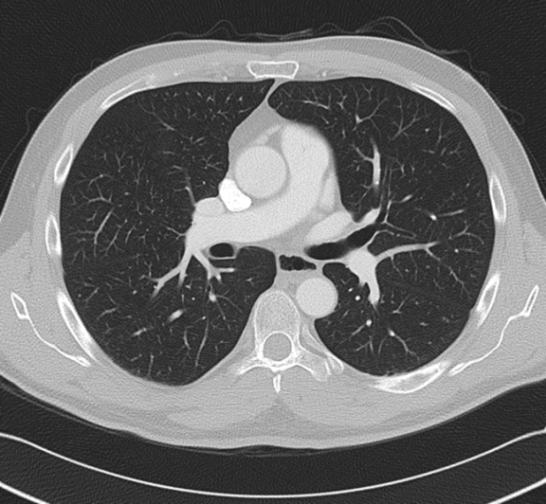

| PBL 1311 Chest CT comparison |
|
|  |
 |
| The normal chest CT is on the left, showing the same plane. It has lighter lung tissue because
its windows are optimized for lung density. Notice the dramatic difference in a lack of visible lymph nodes. In comparison, the right CT shows very large peri-tracheal and peri-bronchial masses in the same plane. | |
|
| |